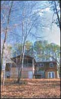

|
Type of centre: Temple/Farm
Contact details
Address: PO Box 897, Hillsborough
N.C. 27278
USA
Ph: +1-(919)-7326492
E-mail:jagannath@com.org
Brief details of centre
The New Goloka Temple was started in 1982 by Bir Krishna Dasa
Goswami, a disciple of Srila Prabhupada. New Goloka is situated
on 16 acres of land, and is surrounded by a river. Its park-like
atmosphere is ideal for spiritual cultivation.
New Goloka is dedicated to the worship of Their Lordships Sri Sri
Radha-Golokananda and His Divine Grace Srila Prabhupada. There are
regular worship services beginning at 4.30am every day. We have
an open house every Sunday from 5–8 pm with chanting, dancing,
discussion of spiritual topics, and of course, FEASTING!
Deities: Sri Sri Radha-Golokananda
Facilities
Iskcon
School
ISKCON School is registered with the state of North Carolina
and meets all government standards. The school is located 20 minutes
between two major Universities, University of North Carolina-Chapel
Hill and Duke University. Situated on over four beautiful forested
acres, the school's more than three thousand square feet includes
a comprehensive library and a computer centre.
E-Mail: urmila@com.org
How to get there
From I-85
Get off exit #164 of Interstate 85. Go south 1/4 mile towards the
MacDonalds. Turn right on Oakdale(across the street from the Citgo
station). When Oakdale ends turn left on to Orange Grove Rd. Take
immediate next right onto New Grady Brown Rd. Follow Grady Brown
until it ends. Turn right on Dimmocks Mill Rd. Continue on Dimmocks
Mill Rd. 1/3 of a mile after Dimmocks Mill Rd goes over Interstate
85 you will see a geodesic dome(ISKCON) on your left. You are now
at ISKCON. There will be a sign "New Goloka" and the mailbox#
is 1032 Dimmocks Mill Rd.
From I-40
Get off exit #261. Go north 1 mile towards the Citgo gas station.
Turn left on Oakdale(across the street from the Citgo station).
When Oakdale ends turn left on to Orange Grove Rd. Take immediate
next right onto New Grady Brown Rd. Follow Grady Brown until it
ends. Turn right on Dimmocks Mill Rd. Continue on Dimmocks Mill
Rd. 1/3 of a mile after Dimmocks Mill Rd goes over Interstate 85
you will see a geodesic dome(ISKCON) on your left. You are now at
ISKCON. There will be a sign "New Goloka" and the mailbox#
is 1032 Dimmocks Mill Rd.
< Back · Top
^
|